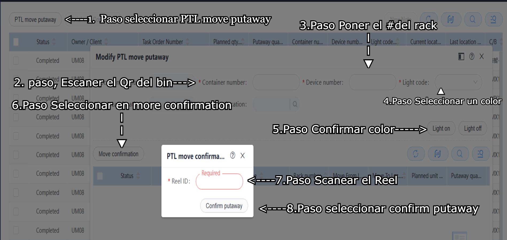

• Para meter rollos a PTL seleccionas Receiving y en Maintain PTL move Putaway.
• Seles abrira la pestaña para meter el rollo, se iran a la parte superior izquierda y entraran en PTL move putaway.
• Despues de eso se les abrira otra pestaña donde rellenaremos la informacion como en la imagen.

• Una ves confirmado el reel se prendera el foco del rack para poder meter el rollo.